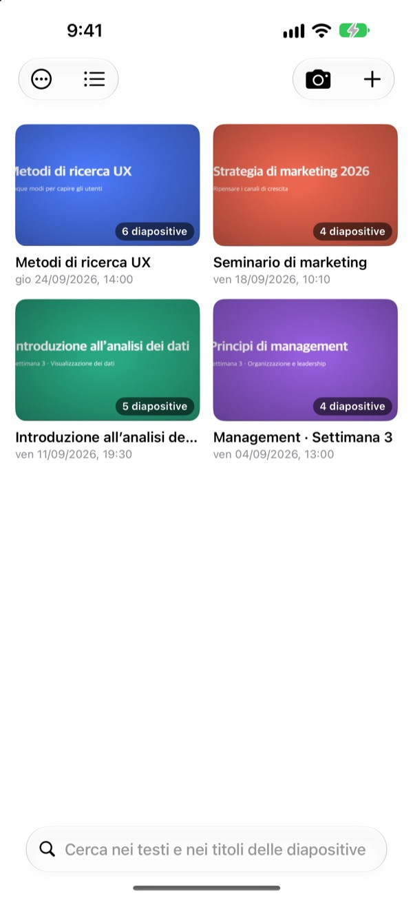
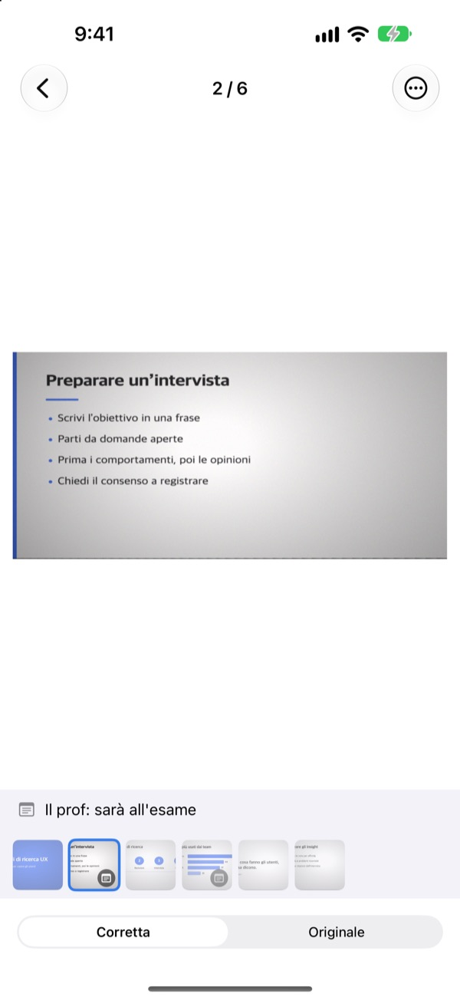
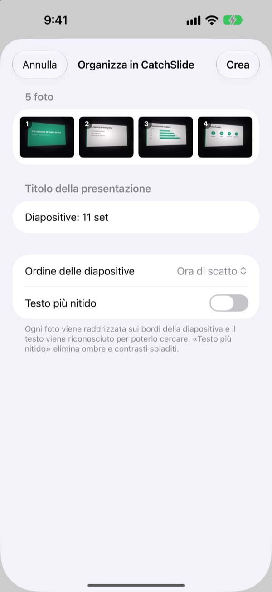
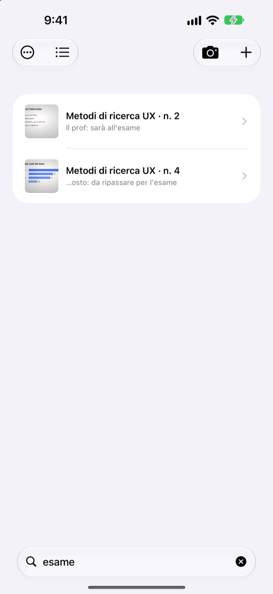

Scattata di lato.
Salvata di fronte.
La fotocamera trova i quattro angoli della slide, la raddrizza e taglia via tutto quello che c’è intorno. Le slide scattate una dopo l’altra finiscono nella stessa presentazione.
Un solo acquisto, tutte le funzioni. Niente abbonamento, niente account.

Raddrizzala tu
Questa foto è stata scattata di sbieco da un posto laterale dell’aula. Il contorno verde indica gli angoli trovati.
Ti è mai capitato di aprire il rullino per ripassare senza trovare la slide?
Dalle ultime file le slide escono sempre storte e si perdono tra selfie e scontrini. In un’aula silenziosa basta il suono dello scatto per farti desistere. CatchSlide scatta senza rumore, raddrizza ogni slide e le tiene insieme per presentazione.
Dritta già allo scatto
La fotocamera segue dal vivo i quattro angoli della slide e diventa verde quando li ha agganciati. Anche se scatti di sbieco, la slide viene raddrizzata come vista di fronte, senza lo sfondo.
Nessun suono di scatto. Attiva Scatto automatico e ogni nuova slide verrà presa da sola, saltando le foto mosse.

Le foto che hai già, tutte insieme
Scegli più foto della lezione nell’app Foto e condividile con CatchSlide. Vengono raddrizzate e salvate come un’unica presentazione, nell’ordine in cui le hai scattate.Testo più nitido elimina ombre e contrasto spento.

Basta una parola per ritrovarla
CatchSlide legge il testo di ogni slide direttamente sul dispositivo. Anche settimane dopo, una sola parola ti riporta alla slide giusta.
Anche le note aggiunte alle slide sono cercabili. Scrivi esame su qualcuna e tutto il programma è a portata di una ricerca.

Si parte in tre passi
- 1
Apri la fotocamera
Dal pulsante nella lista, dal widget nella schermata Home o dalla schermata di blocco.
- 2
Inquadra la slide
Quando gli angoli diventano verdi, scatta o lascia fare allo scatto automatico.
- 3
Ripassa per presentazione
Cerca, aggiungi note ed esporta un PDF per studiare.
Cosa puoi fare con una presentazione
- Registrazione
- Registra mentre scatti, poi ascolta ogni slide dal momento in cui l’hai fotografata
- Trascrizione
- Trasforma la registrazione in testo, mostra cosa è stato detto su ogni slide e lo rende cercabile
- Riassunto con IA
- Riassume la presentazione dal testo delle slide e dalla trascrizione (iOS 26 o successivo su dispositivi compatibili con Apple Intelligence)
- Dispense per il ripasso con una, due o quattro slide per pagina
- Markdown
- Un .zip pronto per Notion o Obsidian
- PowerPoint
- Esporta un .pptx con la trascrizione nelle note del relatore
- Unisci
- Seleziona più presentazioni e uniscile in una
- Sincronizzazione iCloud
- Attivala per vedere le presentazioni sugli altri dispositivi con lo stesso Apple ID. Disattivata di default
- Widget
- Aprono la fotocamera direttamente dalla schermata Home o di blocco
Riconoscimento del testo, trascrizione e riassunti con IA avvengono sul dispositivo.
Lo compri una volta, hai tutto
CatchSlide
- Scatti silenziosi, scatto automatico e raddrizzamento
- Importazione di più foto dall’app Foto
- Slide divise per presentazione, ricerca nel testo e nelle note
- Registrazione, trascrizione e riassunto con IA
- Esportazione in PDF, Markdown e PowerPoint
- Sincronizzazione iCloud e widget
Mance (facoltative)
- Se l’app ti è utile, puoi lasciare una piccola mancia allo sviluppatore
- La mancia non sblocca nulla. Tutte le funzioni restano disponibili anche senza
La trovi nella schermata I miei dati.
Niente abbonamento né acquisti per sbloccare funzioni. Il prezzo per il tuo Paese è indicato su App Store.
Domande frequenti
Come fotografo una slide?
Apri la fotocamera e inquadra la slide. Quando gli angoli diventano verdi, scatta. Con lo scatto automatico attivo, la slide successiva viene presa da sola ogni volta che cambia.
Si sente il suono dello scatto?
No. Il fotogramma viene salvato direttamente dalla fotocamera, quindi è silenzioso in qualsiasi Paese.
Perché le foto finiscono in un’unica presentazione?
Se scatti la foto successiva entro 5 minuti dall’ultima, viene considerata parte della stessa presentazione. Tocca il titolo nella lista per rinominarla e usa Unisci presentazioni per riunire quelle che si sono divise.
Posso aggiungere foto già scattate?
Sì. Selezionale nell’app Foto e condividile con CatchSlide, oppure tocca ＋ nella lista e scegli Importa da Foto. Vengono raddrizzate e salvate come una presentazione nell’ordine di scatto.
Gli angoli non sono stati trovati bene.
Apri la slide, scegli Regola angoli dal menu ⋯ e trascina i quattro angoli al loro posto. Rilevamento automatico li cerca di nuovo e Immagine intera usa tutta la foto. L’originale viene sempre conservato, quindi puoi rifarlo quando vuoi.
Posso cercare il testo nelle slide?
Scrivi una parola nel campo di ricerca in cima alla lista. La ricerca copre testo delle slide, titoli, note e trascrizioni e ti porta subito alla slide. Il riconoscimento del testo avviene sul dispositivo.
Come esporto un PDF?
In una presentazione apri il menu di condivisione, scegli Esporta come PDF e decidi se mettere una, due o quattro slide per pagina. Dal foglio di condivisione puoi salvarlo in File o inviarlo a un’altra app.
Come cambio l’ordine o elimino le slide?
In una presentazione tieni premuta una slide e trascinala. Dallo stesso menu puoi eliminarla o condividerla, e con Seleziona ne elimini diverse insieme.
Come funzionano registrazione e riassunto con IA?
Attiva Registra in alto nella fotocamera e ogni slide conserverà l’audio di quel momento. In Note della presentazione, Riassumi con l'IA crea un riassunto dal testo delle slide e dalla trascrizione. Serve iOS 26 o successivo su un dispositivo compatibile con Apple Intelligence.
Dove vengono salvate le mie slide e registrazioni?
Sul tuo dispositivo. Finiscono sul tuo iCloud solo se attivi Sincronizza in I miei dati, e non serve alcun account. Maggiori dettagli nella Privacy policy.
Domande, bug o idee? Scrivi a leeo@kakao.com.